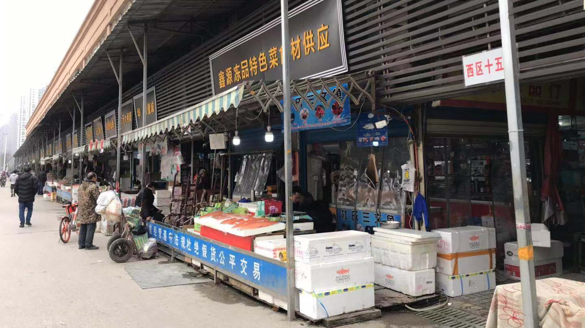
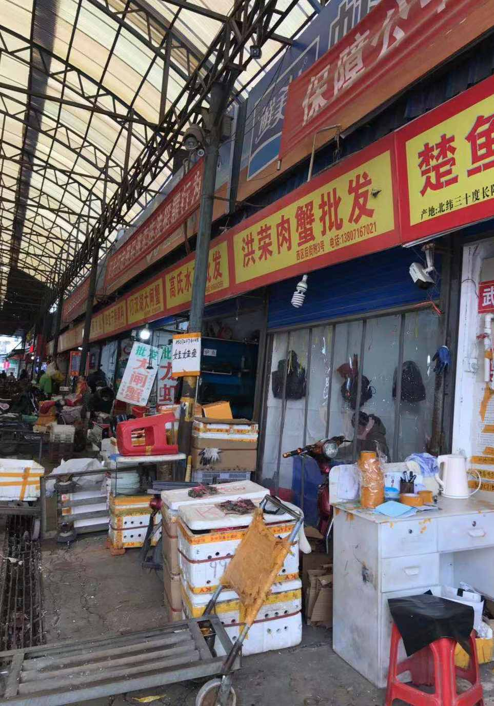
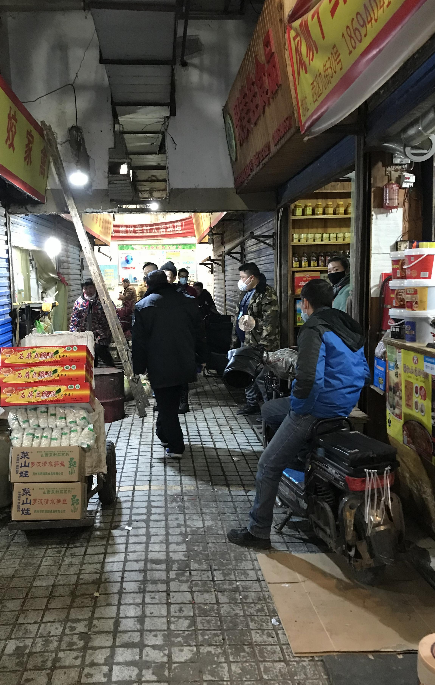

一财现场直击武汉肺炎事发海鲜批发市场，商户仍在正常营业
原文链接 备份链接 第一财经 2019-12-31 13:39:50 听新闻 [* 一财区域 ](/author/100000392.html) 华南海鲜市场是武汉最大的海鲜批发市场。据多方接受采访的人士称，该市场昨晚进行了例行消 …
[* 
陈益刊
](/author/85.html)
一位海鲜市场经营甲鱼的辛先生告诉记者，也是从新闻上知道市场出现肺炎病人，所以也有些担心，戴了口罩。一直在正常营业，没有关停过。
武汉华南海鲜市场陆续出现不明原因肺炎病人。
华南海鲜市场是武汉最大的海鲜批发市场。启信宝数据显示，武汉华南海鲜市场有限公司成立于2005年3月24日，法定代表人为余甜，注册资本2000万元人民币。公司地址为武汉市江汉区发展大道207号。该市场距离汉口火车站仅一公里。目前正值春运高峰期，是武汉人流最密集的区域之一。

据多方接受采访的人士称，该市场昨晚进行了例行消毒。但一位商户告诉第一财经记者，商场会做定期消毒，并不是因为有人得肺炎而专门消毒。
31日下午一点左右，第一财经记者来到华南海鲜市场，看到商户均在正常营业，很少有歇店情况，也很少有人戴口罩。

针对网传的几张商城消毒照片，当地一位陈姓商户表示，他今天凌晨3点来到商城时，消毒人员的工作已经快结束了。网上说因为这边有人得肺炎而关闭商城，这是谣言。因为他们看到的消毒是在凌晨，商户还没上班。“你看现在哪家商户关门了？不都正常营业嘛？”陈姓商户对第一财经记者说。

一位高姓商户称，听说过有人得流感。不过，并不在意这个，可能是年纪大身体抵抗力弱，听说并不严重。商场会做定期消毒，并没有因为有人得病而专门消毒。


一位海鲜市场经营甲鱼的辛先生告诉记者，也是从新闻上知道市场出现肺炎病人，所以也有些担心，戴了口罩。一直在正常营业，没有关停过。

此内容为第一财经原创，著作权归第一财经所有。未经第一财经书面授权，不得以任何方式加以使用，包括转载、摘编、复制或建立镜像。第一财经保留追究侵权者法律责任的权利。 如需获得授权请联系第一财经版权部：021-22002972或021-22002335；banquan@yicai.com。
原文链接 备份链接 第一财经 2019-12-31 13:39:50 听新闻 [* 一财区域 ](/author/100000392.html) 华南海鲜市场是武汉最大的海鲜批发市场。据多方接受采访的人士称，该市场昨晚进行了例行消 …
原文链接 备份链接 第一财经 2019-12-31 10:16:19 听新闻 [* 一财大政 ](/author/100000391.html) 12320热线工作人员表示，武汉疾控部门第一时间前往救治医院采集患者标本，具体是何种 …
原文链接 备份链接 共27例病例，大多是武汉华南海鲜城经营户。7例病情危重，其余病情可控，有2例病情好转拟近期出院。 不明原因肺炎，是2003年SARS事件后，对SARS病例和人禽流感病例及其它传染性呼吸道疾病监测中用的概念。 …